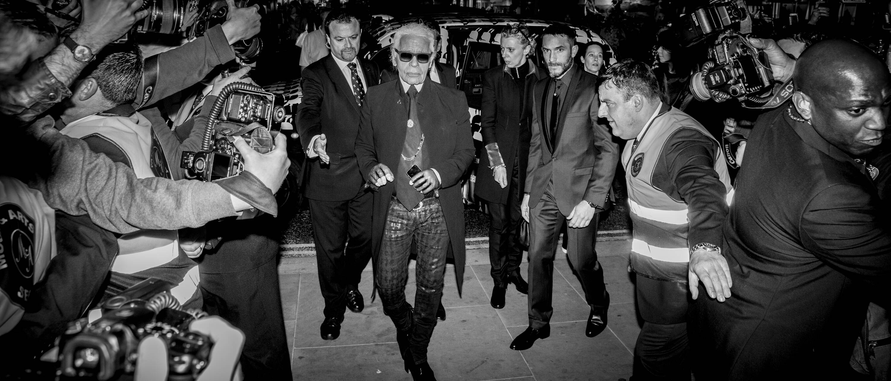
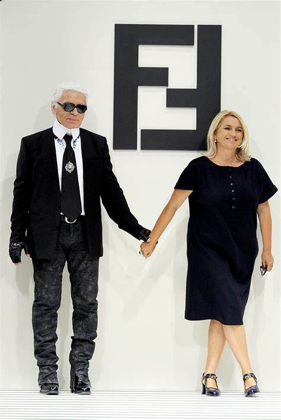
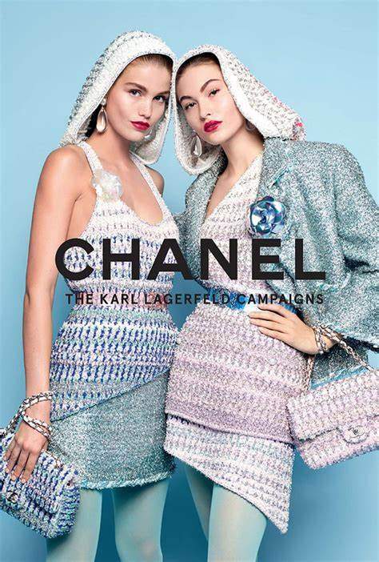
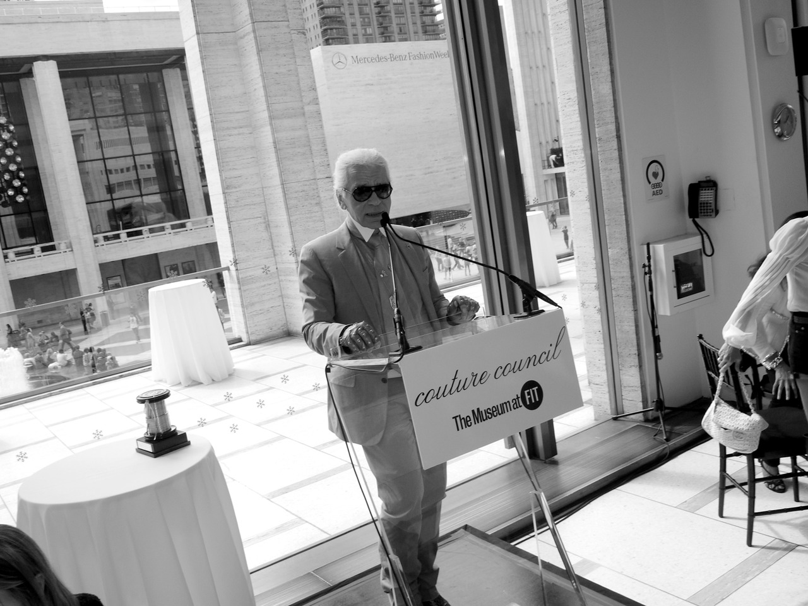
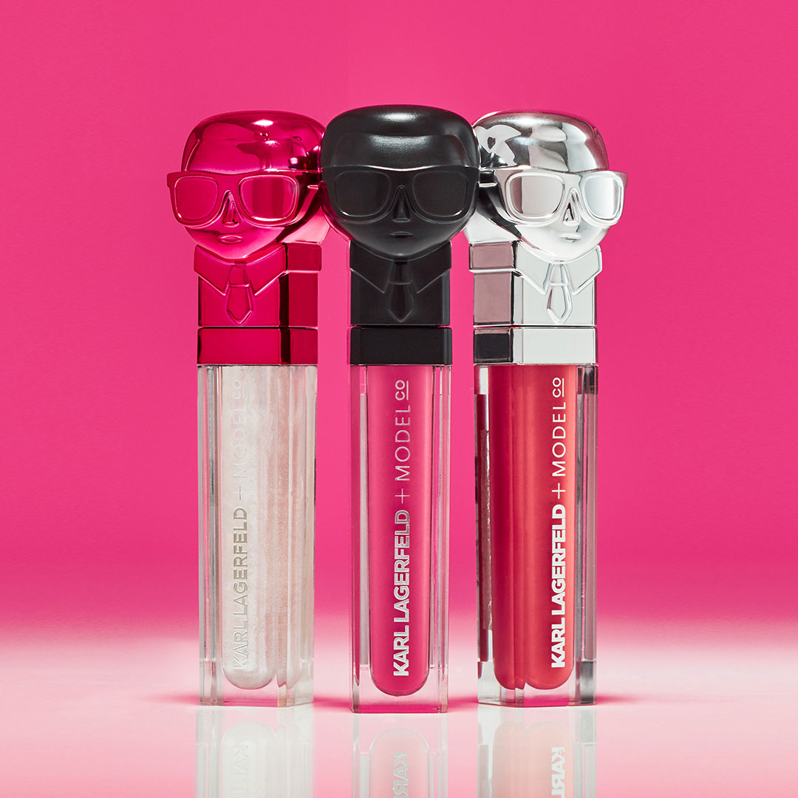
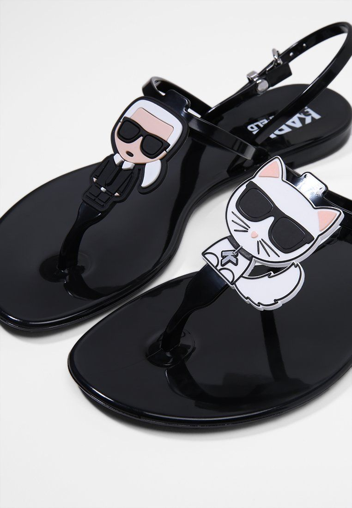
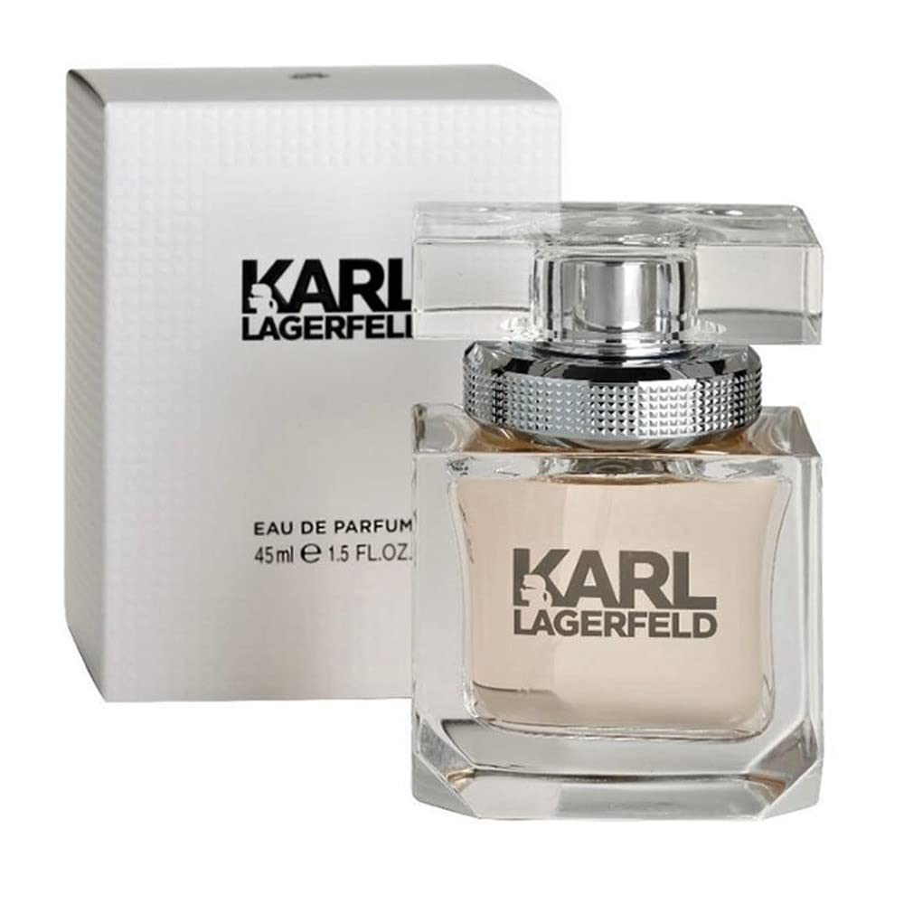
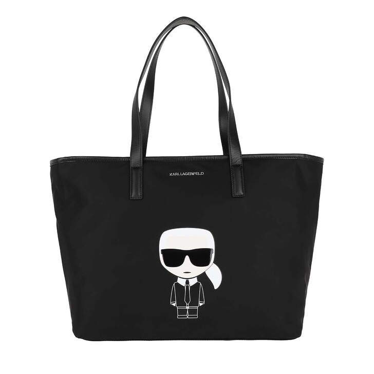
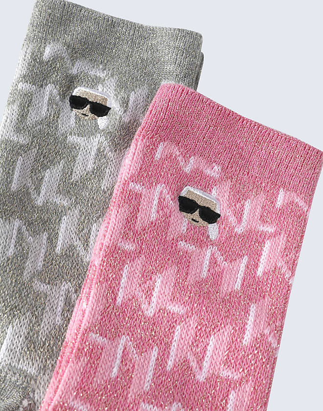

Karl Lagerfeld rođen je 10.09.1933. te je bio njemački modni kreator, dizajner i fotograf. Lagerfeld je živio u Parizu, gdje je uglavnom
i radio. Poznat je i po tom što je bio glavni dizajner modne kuće Chanel.
Lagerfeld je 18 godina bio u vezi s francuskim modelom Jacques de Bascherom, sve do 1989. kada je Bascher preminuo od AIDS-a. Lagerfeld je poželio da nakon
smrti njegovo tijelo bude kremirano te da se njegov prah pomješa s prahom de Baschera.
Nakon zdravstvenih komplikacija u siječnju 2019., Lagerfeld je bio u Američkoj bolnici u Parizu od 18. veljače. Sljedećeg jutra je preminuo od raka pankreasa.
Potvrđeno je da je još od lipnja 2015. boluje od raka prostate.

Početak karijere (1955–1982)
1955. Lagerfeld je pobjedio u takmičenju dizajniranja kaputa, te je nakon toga tri godine radio kao asistent Pierra Balmaina. 1964. preselio se u Rim kako
bi studirao povijest umjetnosti, te radio freelance za mnoge modne brendove poput Valentina, Chloé, Kriziu i druge. 1967. zaposlio se u Fendiu kako bi m
odernizirao njihovu kolekciju krzna, a kao dizajner je tu ostao do smrti.

Chanel (1982–2000)
1980-ih Chanel je zaposlio Lagerfelda, s obzirom na to da se zbog smrti Coco Chanel brend našao u najgorem periodu do tada. Lagerfeld je prema mnogima bio osoba
koja je oživjela tvrtku.
Godine 1984. Karl je osnovao svoj brend "Karl Lagerfeld".
Godine 1993. Anna Wintour je napustila reviju Fendia na tjednu mode u Milanu, s obzirom na to da je Lagerfeld za reviju unajmio striptizete.

2001–2019
2002. godine Lagerfeld je surađivao s brendom Diesel kako bi dizajnirali jeans kolekciju za Lagerfeld galeriju.
Rujna 2010. Lagerfeld je nagrađen Couture Council Fashion Visionary Award od strane Modnog instituta technologije u New Yorku.

    